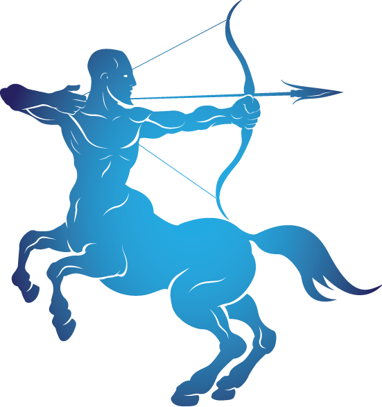
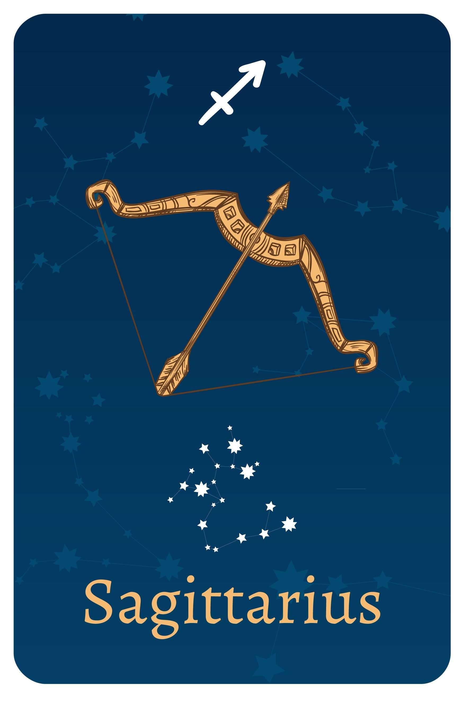

- Date Range : NOV 22 – DEC 21
- Element : Fire
- Color : Purple
- Quality : Mutable
- Day : Thursday
- Ruling planet : Jupiter
- Ruling house : Ninth
- Lucky number : 3, 7, 9, 12, 21
- Lucky gem : Blue Topaz
- Top love Matches : Aries
SAGITTARIUS (NOV 22 – DEC 21)

Sagittarius Personality Traits
Strengths : Generous, idealistic, great sense of humor
Weaknesses : Promises more than can deliver, very impatient, will say anything no matter how undiplomatic
Sagittarius likes : Freedom, travel, philosophy, being outdoors
Sagittarius dislike : Clingy people, being constrained, off-the-wall theories, details
Sagittarius individuals are known for their curiosity and energy, making them natural travelers of the zodiac. Their open mind and philosophical views drive them to explore the world in search of the meaning of life.
As extroverts, they are optimistic, enthusiastic, and always ready
for change. While they are often preoccupied with mental work, they
have the ability to turn their visions and thoughts into concrete
actions and circumstances. Like Aries and Leo, Sagittarius is a Fire
sign that seeks to creatively color the world in their unique way.
They are clear about their intentions and have a strong moral
compass, which can sometimes make them overly honest and lacking in
tact and consideration for others. It's important for them to learn
how to express their opinions in a tolerant and socially acceptable
way.
Sagittarius is ruled by Jupiter, the largest planet in the Solar
system and the greatest beneficent giant in Astrology. Their
enthusiasm has no bounds, and they possess a great sense of humor
accompanied by intense curiosity. They crave absolute freedom, which
fuels their adventurous spirit to explore different cultures and
philosophies.
Sagittarius' Love Style
Ruled by expansive Jupiter, Sagittarius is big-hearted, open, and
always looking beyond a checklist. A Sagittarius rarely has a
“type,”— they are always intrigued by the individual, and don’t make
any assumptions about people until they’ve truly met and spoken with
them.
Sagittarius loves witty back and forths, but also appreciates the
formality of the dating experience. While they are 100% honest in
any situation, they love an excuse to dress up and check out cool
date night locations. They would much rather go to an under the
radar speakeasy than hang out at home, and love impressing you with
their knowledge of, well, pretty much everything and anything.
A Sagittarius is honest to a fault, and doesn’t have a lot of
patience for tears and emotions. They don’t like what they perceive
as emotional manipulation. They fight fair, but once a fight is
over, they want it to be done—they do not like past mistakes brought
up ad nauseum for days, weeks, or years down the line. A Sagittarius
likes laying everything on the table, and some romantic partners may
be frustrated by their cool logic, which trumps emotion every time.
A Sagittarius expects their partner to continue to learn and grow
throughout their lives, and truly seeks someone who they connect
with on a soulful level.
Sagittarius' Friendship Style
Sagittarius is loyal, loving, and the type of person you can feel has
your back even if you’ve only known them for 24 hours. That said, a
Sagittarius isn’t interested in your drama, and doesn’t have a lot of
patience for friends who say one thing and do another. A Sagittarius
is incredibly loyal, but won’t hesitate to let you know if they see
any faults or anything they feel you could be doing better.
A Sagittarius collects friends, but may not be the best at keeping up.
They like friendships IRL and in real time; they are great at
reconnecting with after a decade or two lapse, and don’t worry about
the small things. In their mind, a long conversation is far better
than a birthday card.
Three reasons why Sagittarius make great friends
- Sagittarius inspires and challenges you. Are they fearless? No. They feel the fear and do it anyway, and watching the confident way they trailblaze can help you be more confident in your own life, too.
- They’re intelligent AF. Get a Sagittarius talking about a topic they love, and you’ll always learn something new, and probably step away from the conversation feeling like you want to do a deep dive into that subject, too.
- Honest Sagittarius will never talk behind your back, and if they’re unhappy with you, you will hear from them first. Sags aren’t interested in drama, and a fight will always bring you closer.
Sagittarius are amazing! Their name says it all:
S for seductive
A for adventurous
G for grateful
I for intelligent
T for trailblazing
T for tenacious adept
A for adept
R for responsible
I for idealistic
U for unparalled
S for sophisticated
Sagittarius career, money & success traits
Sagittarius’ greatest career strength: Leadership. Everyone naturally looks to Aries, and being responsible for others comes naturally.
Sagittarius' greatest career challenge: Feigning interest. When a Sag isn’t interested in their job, it’s tough for them to pretend, and even though they need a paycheck, they can’t fake enthusiasm for work they feel ‘meh’ about. Because of that, many Sags find working as a freelancer or becoming an entrepreneur and making their own hours is their best path forward.
Sagittarius individuals have a clear focus and will work tirelessly to bring their visions to life, but often struggle to maintain this focus and may get distracted along the way.
It can be challenging for them to stay on track until their goals are achieved. They thrive in a dynamic work atmosphere and enjoy working in teams, often lifting the spirits of others when they are feeling down. Jobs that suit Sagittarius individuals include those of a travel agent, photographer, researcher, ambassador, and freelance activities that allow them to organize their own time. Money can be a weak spot for Sagittarius individuals as they tend to overspend, giving in to all their cravings. They have an extremely positive outlook on life and believe that there is so much to see, possess, touch and smell in this world that it would be a shame to waste any time waiting saving, or carefully planning their finances. They are willing to take risks they don't have to take, sometimes wearing rose-colored glasses and ending up disappointed. However they deeply believe that the universe will provide them with everything they need.

Motto
"Towering genius disdains a beaten path."
Famous Sagittarius

Taylor Swift
(Singer)
Dec 13, 1989
Sagittarius
Dec 13, 1989
Sagittarius

Xabi Alonso
(professional footballer)
Nov 25, 1981
Sagittarius
Nov 25, 1981
Sagittarius

Miley Cyrus
(Singer)
April 09, 1990
Sagittarius
April 09, 1990
Sagittarius
Join Our Daily Overview
Your Astrological overview guides you on what to look out for and how to act in tune with the stars and planets each day.
Was this page helpful?
Do not selling My personal info!
© Copyright-2023 -All right reserved.